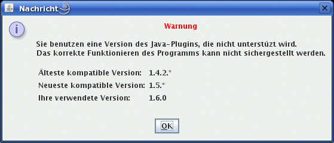

Übersicht > Fehlermeldungen
Fehler beim Programmstart
Je nach Konfiguration Ihres Rechners können beim Start eines Applets unterschiedliche Meldungen erscheinen.
Zertifikat annehmen
Falsche Version des Java-Plugins
Dieses Fenster erscheint wenn eine nicht unterstüzte Version des Java-Plugins benutzt wird.
Es handelt sich lediglich um eine Warnung, da die Applets zuvor nicht mit jener Java-Version getestet wurden.
Um sicher zu stellen, dass die Applets einwandfrei laufen, sollte die auf dem Informationsblatt angegebene Version
des Java-Plugins benutzt werden.
